| 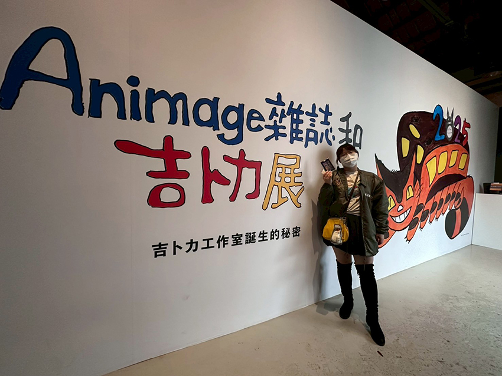 （圖一） |
Animage，是日本第一本正式發行的商業動漫雜誌，由德間書店在1978年5月26日出版創刊。在那個資訊不流通也沒有手機的年代，可以說是動漫雜誌界的先驅，孕育出許多那個年代的經典，扮演帶動動漫發展有著重要的角色。如今，Animage雜誌已經走過40幾個年頭了呢！
| 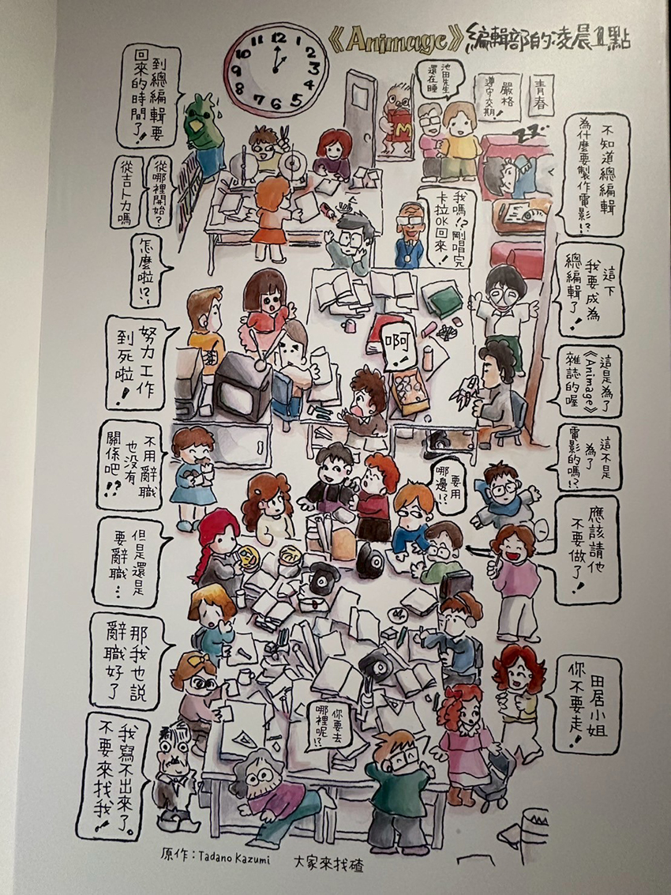 （圖二） |
（圖二）是Animage編輯部的凌晨一點的插圖，可以看得出來編輯部都還很熱鬧的努力加班、苦中作樂，一邊抱怨一邊加班的樣子，非常熟悉，以一個詼諧有趣的方式呈現給讀者們。這也是Animage雜誌的魅力之一，他不僅僅是用文字介紹作品，也會利用圖片等各種方式連結作品與讀者們。
這次展出亮點之一，當然是吉卜力工作室誕生的契機，以及廣為人知的作品，如 : 風之谷、龍貓、天空之城等，這些經典作品是如何從漫畫到搬上大螢幕，以及背後的小故事。甚至包含珍貴的手稿，讓人不禁讚嘆，這些作品被匠人們一筆一畫，從無到有創造出來的神奇。另外，最讓我印象深刻的展品除了手稿外，還有一整面木頭展示物（圖五），是風之谷當年在日本上映電影院外的手繪海報牆，讓人非常驚豔！
| 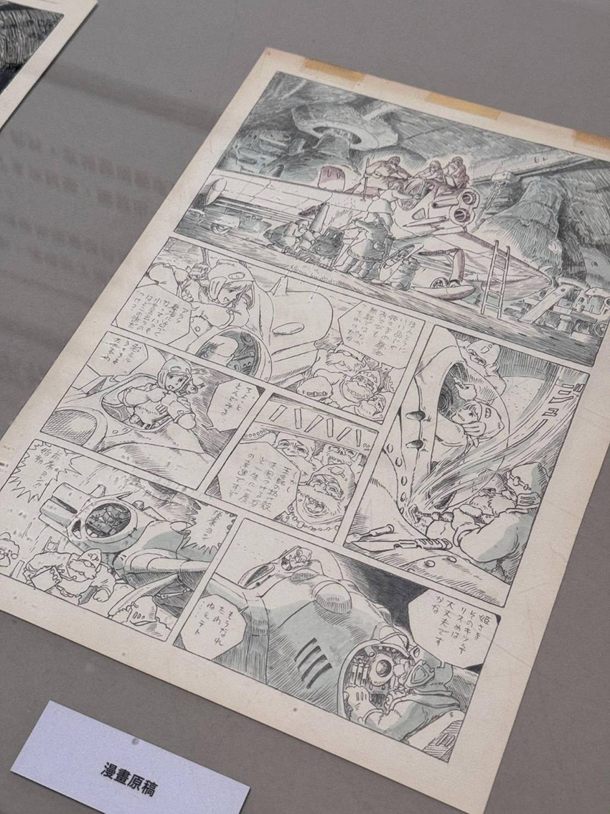 | |
| （圖三）風之谷的漫畫原稿。 | |
| 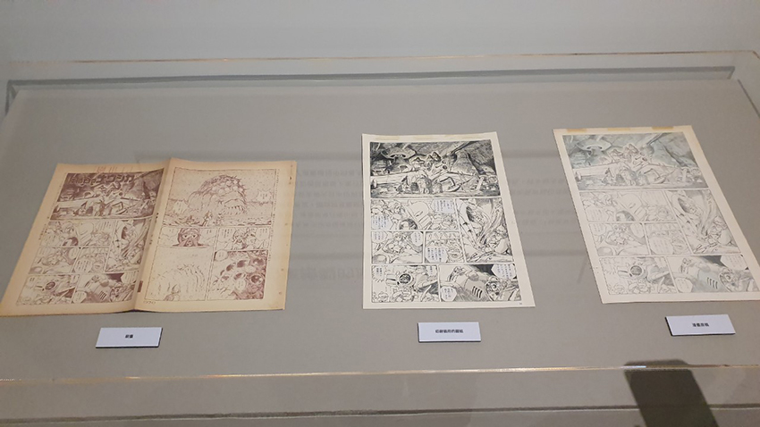 | |
| （圖四）展示了從原搞、印刷稿圖紙、刷畫。 | |
| 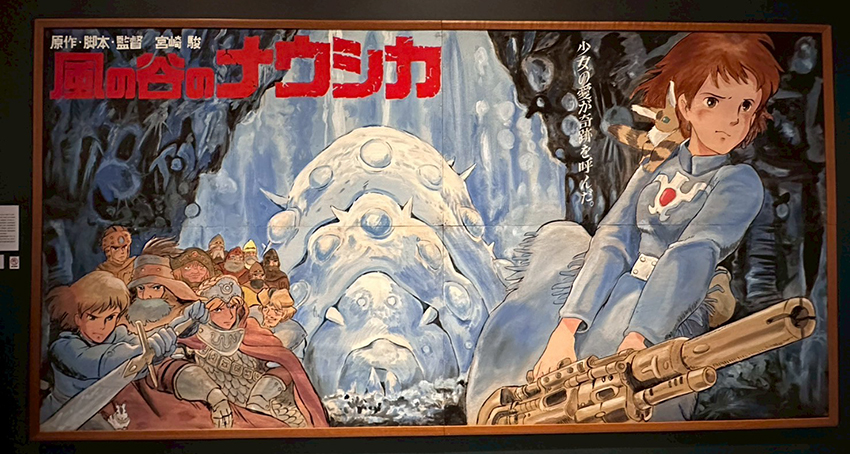 （圖五） |
展覽中吉卜力工作室除了宮崎駿外，也展出了高畑勳執導的作品手稿，包含螢火蟲之墓、輝耀姬物語等。從難得一見的手稿中，可以看出高畑勳細膩寫實的風格（圖六）。
| 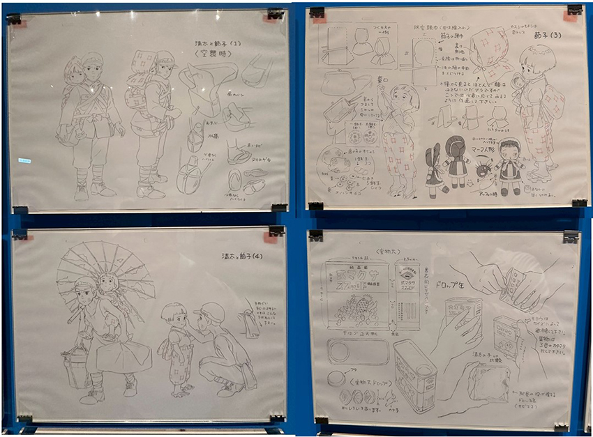 （圖六） |
經過這次展覽介紹也才得知，原來螢火蟲之墓與龍貓是同年同月同日上映的作品 （1988年4月16日），兩部動畫電影可以說是當時日本動畫界的兩大代表作。其實最初，兩部作品都計劃是片長約60分鐘，但由於高畑勳的螢火蟲之墓製作過程中延長了片長，為了競爭，宮崎駿的龍貓也跟著延長。最終，兩部都變成90分鐘，一起以長篇雙片的形式上映。可以見得吉卜力工作室兩大巨頭宮崎駿與高畑勳的龍爭虎鬥跟相愛相殺，也因為有他們的良性競爭所激發出的火花，讓我們有機會看到更精采的作品。
當然，這次展覽的主題是Animage雜誌和吉卜力展，除了吉卜力作品外，還有許多厲害的作品的手稿以及當時刊登在Animage雜誌的採訪內容，像是魔法小天使、機動戰士鋼彈、魯邦三世、超時空要塞、宇宙戰艦大和號等。
| 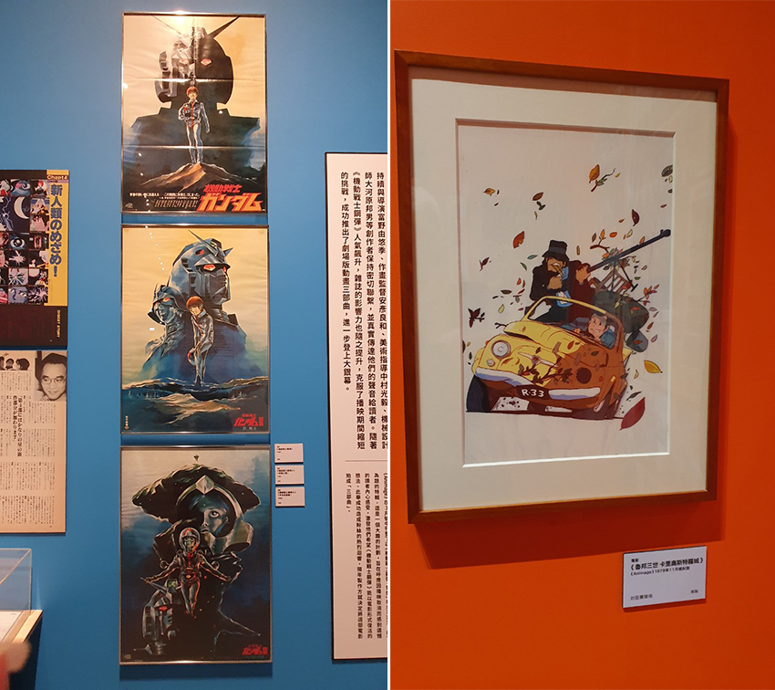 展出的插圖原畫和當年的海報也都是非常難得一見的藏品。 |
一邊看著每個作品的歷史，一邊讚嘆，因為作者和許多人的用心付出，讓這些作品沒有被遺忘，時隔今日依舊被許多人追崇跟喜愛。提到模型，這次展覽也展出許多珍貴的展品。
| 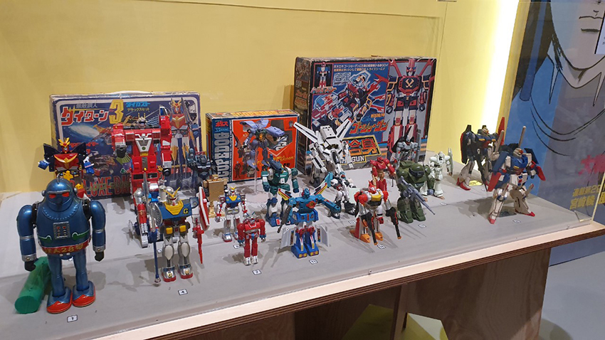 機動戰士鋼彈的模型，有些盒子看得出歷史的痕跡，但內容物的鋼彈依舊被完好收藏。 |
| 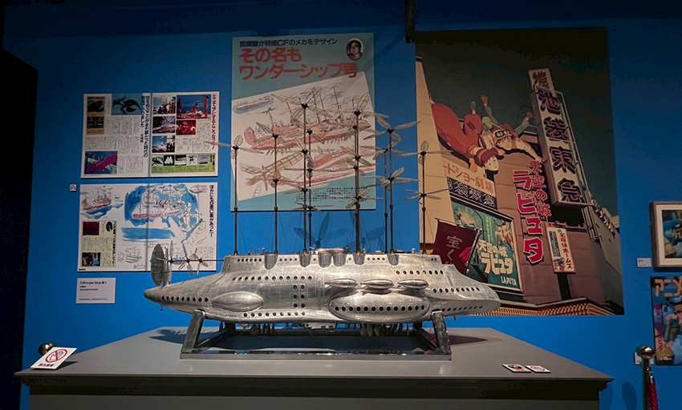 （圖十） |
（圖十）為首度展出宮崎駿在天空之城上映前所設計的飛行船立體模型。雖然是模型，但這艘飛行船可是長達2公尺呢！34年後，依然完好無損地保存著，讓我們能近距離觀看栩栩如生的飛船在自己眼前。展覽的特色之一，是設計了許多場景讓參展者親身融入Animage雜誌封面，成為主角，彷彿置身於吉卜力的動畫世界中。場景包含天空之城、魔女宅急便、龍貓以及風之谷，為這場展覽增添了一些趣味和互動性。
| 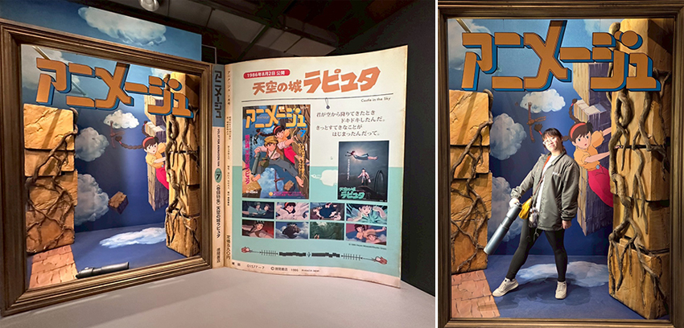 | |
| （圖十一） | （圖十二） |
透過這次觀展，了解到更多作品背後有趣的細節，瞻仰許多厲害細膩的作品手稿。也許就像是宮崎駿曾說：「創作不是一種邏輯式的思考，是腦蓋被打開了。」感謝這些去挖掘腦海中最深層的思想的作者們，孕育出的偉大作品。相信不管是吉卜力或者日本動畫的粉絲都會被這些展品所感動。
| 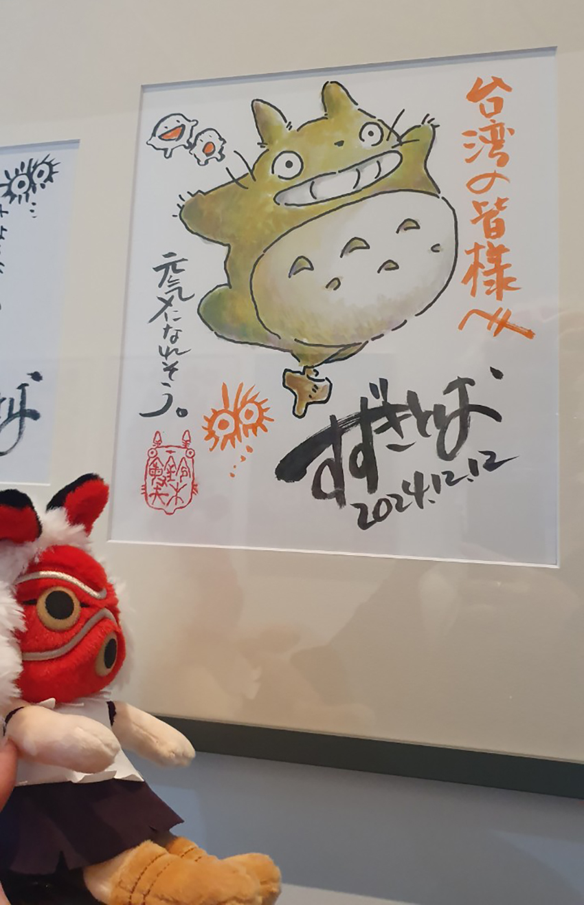 |